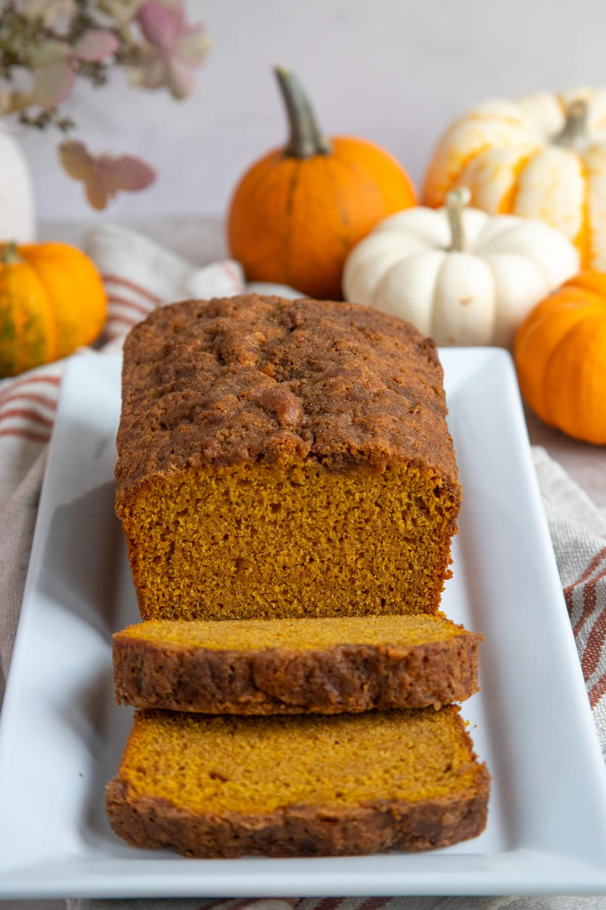

Home
A soft, cozy coffee cake filled with warm punmpkin spice flavor and a sweet cinnamon-sugar ribbon throughout. Perfect for fall mornings or holiday gatherings. Best enjoyed with a hot cup of coffee or hot chocolate!
For the Cake
For the Filling
General Note
Preheat the oven to 400°F (200°C). Spray a 10-inch Bundt or tube pan with cooking spray and coat with cinnamon sugar.
In a large bowl, beat the sugar and butter together until light and fluffy. Add the eggs one at a time, then mix in the pumpkin pie spice and vanilla.
In a seperate bowl, whisk together the flour, baking powder, and baking soda. Add the dry mixture to the wet in small portions, alternating with sour cream. Begin and end with the flour mixture.
Combine the brown sugar and cinnamon in a small bowl. Pour ⅓ of the cake batter into the prepared pan, spring half of the cinnamon mixture on top, then repeat with another layer. Finish with the remaining batter.
Bake for 8 minutes then lower the oven temperature to 350°F (175°C) and continue baking for about 40 minutes, or until a toothpick inserted in the center comes out clean.
Let the cake cool in the pan for 10 minutes, then remove from the pan to cool fully before slicing. Dust with powder sugar or icing if desired.